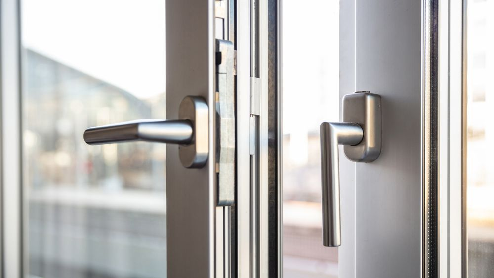
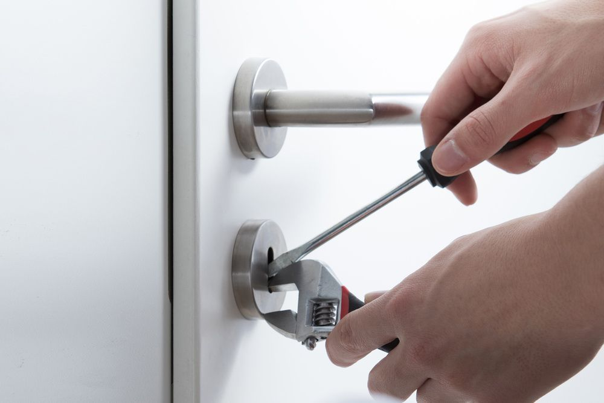

On this page
AT A GLANCE
At SPL Security Solutions, the safety and security of your property is our top priority.
Get A Free Quote Now!
Thank you for contacting SPL Security Solutions.
We will be in touch soon.

Advanced Security for Homes & Commercial Spaces
At SPL Security Solutions, the safety and security of your property is our top priority. We provide a comprehensive range of locksmith services for residents and businesses of Currumbin, including key cutting, master key systems, restricted key systems and high-security locks. Our tailored solutions are designed to combat potential threats and minimise risks through advanced technology and expertise.
Our team has years of experience in the industry and we are committed to providing professional and reliable services to our clients. We work closely with our customers from consultation through to after sales maintenance to ensure their security requirements are met every step of the way.
For more information on our comprehensive range of locksmith services, call (07) 5588 8111.
Currumbin homeowners rely on our residential locksmith services for all their home security needs. With precise lock installations, timely repairs and secure rekeying, we've got every base covered. In addition, our key duplication services and fast emergency lockout support ensure you're never left stranded.
Our commercial locksmith services are here to help Currumbin businesses remain secure. We provide high-security lock installations, master key systems and access control solutions to manage who has access to different areas of your premises. Our security assessments can identify any weaknesses in your current setup and our emergency assistance is available 24/7.
Our automotive locksmith services cater to drivers in Currumbin who need prompt and efficient assistance for any key issues. From lost or damaged keys to malfunctioning ignitions, our team has the expertise to help. We also offer transponder key programming and 24/7 emergency assistance for added convenience and peace of mind.
The introduction of restricted key systems in Currumbin has significantly enhanced security for local businesses and organisations. By preventing key duplication without proper authorisation, we ensure access is tightly controlled and restricted to authorised individuals. This provides an efficient way to manage entry points and sensitive areas, offering a high level of security and peace of mind.
Our Currumbin clients can enjoy peace of mind with our selection of high-quality safes, designed to offer ultimate protection for valuables and sensitive documents. Our services include professional installation, ongoing maintenance and swift unlocking in emergencies, with each safe providing a varying level of protection against theft, fire and in some cases water damage.
What level of protection do you need for your property? Our team can help you answer this question and design a tailored security system for your Currumbin premises. Our solutions include CCTV cameras, alarm systems, access control and intercoms for comprehensive surveillance and monitoring. We'll work with you to find the most effective solution within your budget.
In Currumbin, we provide lock hardware designed to meet various security challenges. From reinforced deadbolts to innovative smart locks, our products deliver exceptional protection and functionality.
Our door hardware selection in Currumbin features strong hinges, sleek handles and modern closers. These options provide reliable door functionality while complementing your property’s overall design.
We supply high-quality architectural door hardware, including fire-resistant solutions, seamless closers, and decorative handles, ensuring functionality and style for all design preferences in Currumbin.
24/7 Emergency Locksmith Services
Currumbin is a busy and bustling area, making it even more important to keep your property secure at all times. Our 24/7 mobile locksmith services are available in Currumbin to help with any lock-related emergency. From lockouts to break-ins, our team will be there to assist you whenever you need us.
We understand the urgency of securing your property after an attempted break-in, which is why we offer emergency security assessments and repairs to ensure your home or business is safe and secure. Our team also provides key cutting services, so you can have spare keys on hand in case of future emergencies.

Contact Details
24/7 Emergency Locksmiths or Security Tech


Trading Hours
Retail Shop

Frequently Asked Questions
-
Can digital locks be hacked?
Like any smart device, digital locks can be vulnerable to hacking if not properly secured. However, manufacturers continuously improve encryption and security features. Users can protect themselves by using strong passwords, enabling two-factor authentication and keeping software updated.
-
What should I do if my key keeps getting stuck in the lock?
If your key keeps getting stuck in the lock, try using a silicone-based lubricant on the key and in the lock. Avoid forcing the key out as this might break it inside the lock. If the problem persists, consult a locksmith as the lock may need repair or replacement.
Locksmith & Security Solutions Gold Coast, Brisbane & Northern NSW